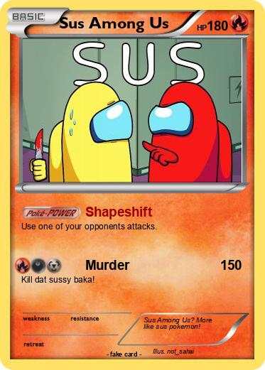

Em Among Us existe um impostor, e isso causa diversas coisas, desde de desconfiança entre os jogadores até mesmo a expulsão de alguem injustamente , e isso para o impostor é uma otima coisas ja que o ajuda a persuadir e enganar seus adiversarios os
Bem vindo ao site sobre o jogo fenomeno: Among Us
Among Us é basicamente um jogo sobre ver olhar os jogadores do jogo para descobrir um impostor entre eles. Claro o jogo tambem tem como objetivo secundario as "tasks" ou "terefas" que ao completas o jogo é vencido (pelos tripulantes)
Mesmo com um primissa simples e em muito tambem por isso, o jogo se tornou uma fébre no mundo inteiro
Claro, não só de tripulantes vive uma espaço-nave, o jogo contava com um tipo de jogador que tinha um papel diferente do demais: O Impostor
O objetivo do impostor é ser o unico na nave, e ele fara de tudo para alcançar esse objetivo, seja sabotar a nave até ela colapsar ou matar todos os tripulandes um a um